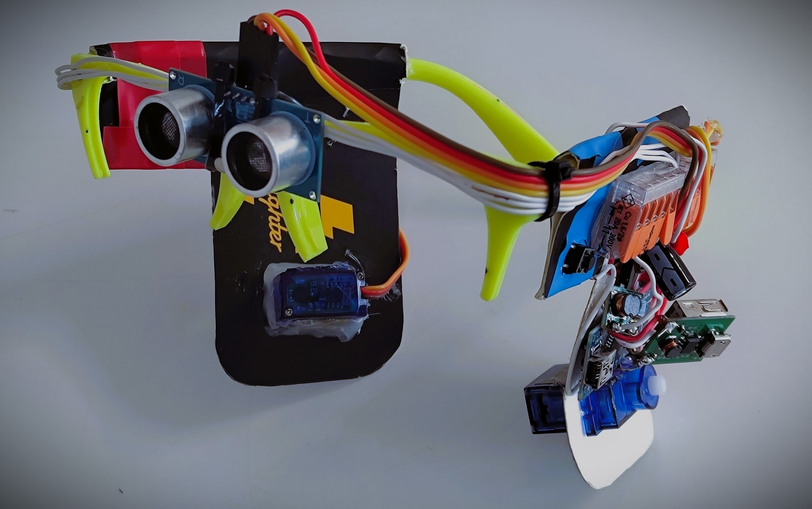

Snappy

Description
What is Snappy?
Snappy was created during the Covid pandemic to make wearing a mask a more elegant solution.
The normal approach in the pandemic was to take a mask everywhere you go and anytime someone comes close or you enter a building, you had to pop on your mask. This has two major problems: you could forget your mask at home and you need two free hands to place it over your nose. I fixed those problems by combining some motors and sensors with a mask and putting them on some glasses.
“Snappy”, how I call this prototype, can measure the distance of the nearest object you are facing and if someone comes closer than 1.5m, two motors will be triggered and the mask, under your chin, will move over your nose. Sometimes you might walk around a mall, where you need to keep your mask on, even if nothing is near you. In that case you simply hold a button and it will disable the motors, giving you the opportunity to manually move the mask wherever you like.
What are the components of Snappy?
Distance sensor
I used an ultrasonic distance sensor, because it’s cheap and I have several of them.
The negative side of using this sensor is, that it’s big and it has problems with sound absorbing walls.
Motors
I used very standard cheap plastic 90g servos.
Chip
While a custom pcb would be a lot smaller, I used an Arduino Nano.
Before I create a pcb tho, I first have to find out which settings (motor speed, motor range, cooldowns …) are the best for daily use.
Battery
Nothing special, just a small lithium ion battery, that I had left over.
Planned
I want to slowly reduce the size of all the parts.
The ultrasonic distance sensor will be changed to a lidar senor. This will reduce the size and the distance sensor will work with lasers instead of sounds like all modern distance sensors.
The servo motors will be broken down to the smallest parts and will be realigned to properly hide all those parts in dedicated 3d printed cases.
At the absolute last, I will do the custom pcb chip.
I’ll also find a proper battery, that fits better.